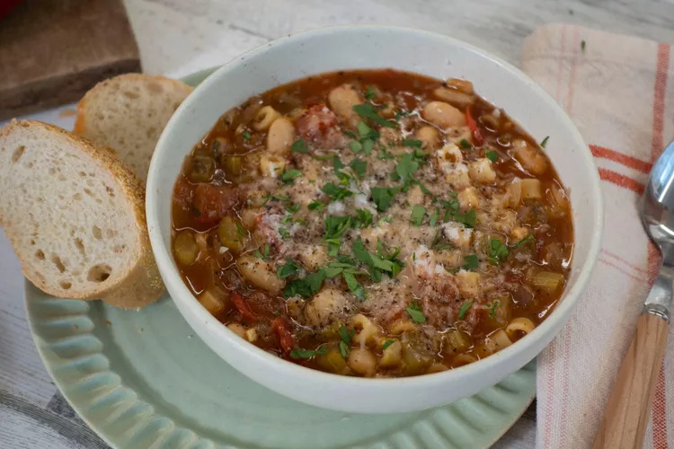

Pasta e Fagioli (Pasta and Beans)

Description
Pasta e fagioli (pasta and beans) share the spotlight with aromatics and fresh tomates in this traditional Italian soup. Serve with a crisp salad and a hot loaf of garlic bread and you have a meal! Garnish with shredded Parmesan cheese.
Ingredients
- Oil: This pasta fagioli recipe starts with cooking an onion in olive oil.
- Vegatables: You'll need an onion, celery, and a can of cannellini beans.
- Seasonings and herbs: the flavorful soup is seasoned with fresh garlic, parsley, Italian seasoning, crushed red pepper flakes, and salt.
- Broth: Use store-bought or homemade chicken broth.
- Tomatoes: You'll need fresh chopped tomatoes and a can of tomato sauce.
- Pasta: Make this traditional pasta fagioli with ditalini noodles (or any noodle you like).
Steps
- Heat olive oil in a large saucepan over medium heat. Add onion, celery, garlic, parsley, Italian seasoning, pepper flakes, and salt; cook and stir until onion is translucent, about 5 minutes. Stir in chicken broth, tomato sauce, and tomatoes. Reduce the heat to low and simmer for 15 to 20 minutes.
- Add pasta and cook until tender, about 10 minutes.
- Stir in undrained beans and cook until heated through, 3 to 4 minutes.